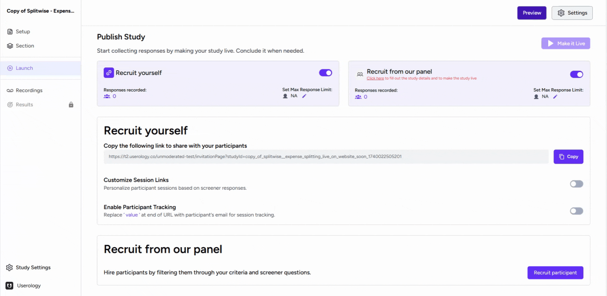
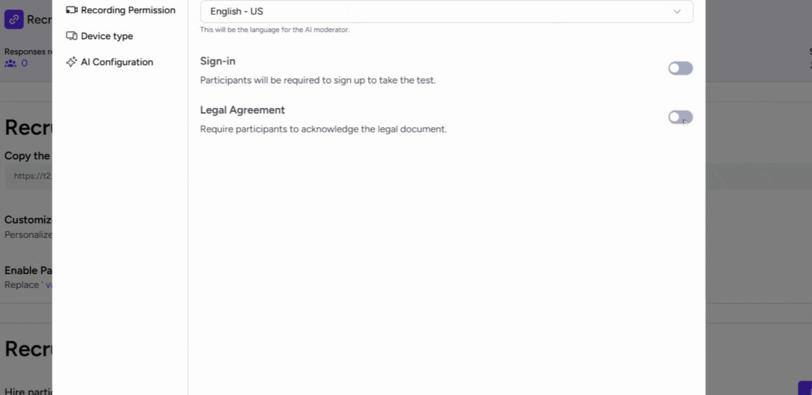
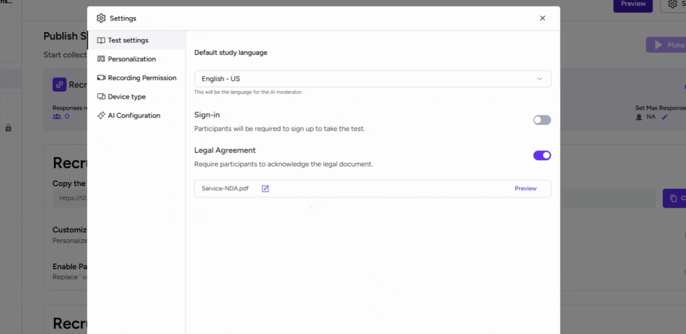
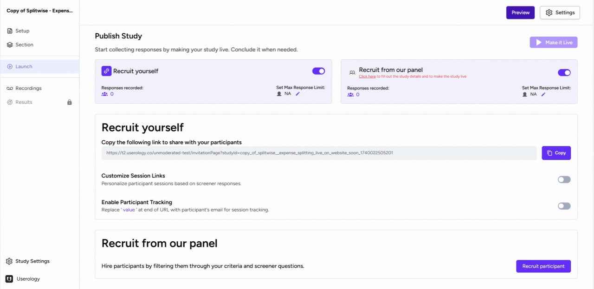

This article provides a step-by-step guide on how to upload a legal document to your study in Userology.
1. Accessing the Settings
Start by navigating to the Launch tab of your study and click on the Settings button. In the Test Settings tab, you will find an option for a legal agreement. This feature requires participants to acknowledge the legal document before proceeding with the study.

2. Uploading Your Document
After selecting the Legal Agreement button, Click on the 'Upload' button to upload your legal document.

3. Previewing and Editing Your Document
Once your document is uploaded, you can preview it by clicking on the 'Preview' button.
If you need to add another document besides the one you uploaded, you can edit the document by clicking on the 'Edit' button.

4. Experiencing the changes
Once you upload and edit your document, click the 'Preview' button to see your study. Before starting the study, participants must read the legal document. They can do this by clicking on it. They can only move forward with the study after clicking 'I agree with the terms'. After agreeing, participants can start the study as usual.

If you need further help, please email us at support@userology.co